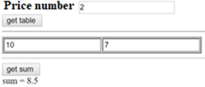

Задача 1
Розробити калькулятор.

Задача 2
Зробити конвертер валют (курси валют – константи у скрипті).

Задача 3
Користувач задає рік народження. Визначити кількість років користувача.
Задача 4
Наперед задано у скрипті масив зі списком бажань. Після завантаження сторінки випадковим чином вибираються 3 і відображаються у окремих div (їх треба створити і додати на сторінку)
Задача 5
Відобразити таблицю 3*4 з випадковими числами (її треба динамічно створити і вставити на сторінку)
Задача 6
Користувач задає кількість оцінок і натискає на кнопку «get table». В результаті формується таблиця з input, куди користувач вводить оцінки. Після цього натискає на кнопку “get sum” і знаходить середнє значення.
Задача 7
Подорож складається з 3 етапів. На кожному етапі користувач може вибрати один з видів транспорту (авто, автобус, літак - випадаючий список), харчування (сніданок, обід, вечеря – checkbоx) та одного з 3-х гідів(використати - radio buttons). Ціни визначте самі. Підрахувати загальну вартість.